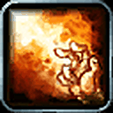
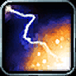
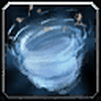
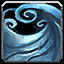
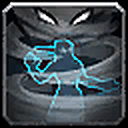
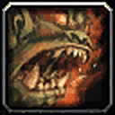
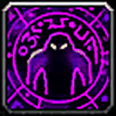
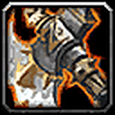
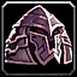

Eureka!






Expansive Mind (+5% mana) and Eureka! (cheaper, stronger next 3 casts); Escape Artist is a PvP bonus.


Not covered in the guide.


Not covered in the guide.



Slight edge: Beast Slaying, Regeneration, Rapid Regeneration (pairs with Ice Block) and Berserking cast speed.


Not covered in the guide.




Not covered in the guide.